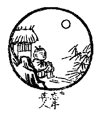

BuddhaSasana Home Page
This document is written in Vietnamese, with Unicode Times
font
 Dẫn
Pháp không hai pháp, trâu gọi là tâm. Dụ tên khác của thỏ bẫy, bày sai biệt của cá tôm. Như vàng ra khỏi khoáng, tợ trăng không mây. Một đường quang sáng, ngoài kiếp oai âm.
Giảng Giải
Pháp không hai pháp, trâu gọi là tâm: Tâm thể chân thật không hình tướng, vượt ra ngoài đối đãi hai bên, nên gọi là pháp không hai. Trâu chỉ cho tâm hay gọi là Thiền. Dụ tên khác của thỏ bẫy, bày sai biệt của cá tôm: Người bẫy thỏ làm cái bẫy để bắt thỏ, con thỏ và cái bẫy là hai loại khác nhau. khi làm cái bẫy gài thỏ thì được gọi là bẫy thỏ. Nghĩa là cái bẫy là cái bẫy, con thỏ là con thỏ, nhưng vì cái bẫy để gài thỏ nên được gọi là bẫy thỏ. Cũng như cái nôm dùng để bắt cá, gọi là cá nôm, thật thì cái nôm không phải là con cá. Cũng vậy, con trâu tượng trưng cho tâm (thể), tâm không phải là trâu. Ở dây, mượn ngôn từ con trâu nói na ná cho người hiểu, nương theo đó để mà tu tập. Như vàng ra khỏi khoáng, tợ trăng không mây: Vàng đã lọc rồi, thì thuần là vàng, không còn có cát sạn lẫn lộn. Như mặt trăng trong trời không mây sáng rỡ. Người tu đến đây, tâm thanh tịnh sáng suốt không bị vẫn đục bởi tình thức loạn tưởng, giống như vàng ròng, hay mặt trăng sáng đêm không mây. Một đường quang sáng, ngoài kiếp oai âm: Chỉ còn một tâm thể thanh tịnh sáng suốt, không chút vọng thức xen tạp, nên xuyên suốt cả không gian và thời gian, đối với không gian thì không thấy có giới hạn, với thời gian thì thấy không có thủy, không có chung. Người tu tới đây thường lầm cho là đã thành Phật vì tâm thể thật thanh tịnh sáng suốt.
Tụng
Kỵ ngưu dĩ đắc đáo gian san
Ngưu dã không hề nhân dã nhàn
Hồng nhật tam can du tác mộng
Tiên thằng không đốn thảo đường gianDịch
Cỡi trâu về thẳng đến gian san
Trâu đã không rồi, người cũng nhàn
Mặt nhật ba sào vẫn say mộng
Dây roi dẹp bỏ bên cạnh sàngGiảng Giải
Chú mục đồng đã cỡi trâu về đến nhà rồi, chú không còn bận lòng nghĩ đến trâu để chăn giữ nữa, nên nói trâu đã không còn, chú được rảnh rang nhàn rỗi nên sáng ngày, mặt trời lên ba sào mà chú vẫn còn ngủ say. Khi ấy, dụng cụ chăn trâu như roi dây không cần, quăng hết vô nhà cỏ.
Cũng vậy, khi tâm vọng tưởng không còn dấy khởi nữa, hoàn toàn lặng lẽ, tức là tâm đã trở lại chỗ ban sơ thanh tịnh sáng suốt thì hành giả không còn dụng công tu tập nữa, đối với mọi vật không bận lòng, tùy thời đói ăn mệt ngủ.
[Lời Tựa]
Tranh Thiền Tông: [1] [2] [3] [4] [5] [6]
[7] [8] [9] [10]